Et af de … temaer i NewDeal Invest
Chips og halvledere
Chips udfører beregninger, gemmer data og styrer elektronik. AI kræver både kraftige processorer og hurtig hukommelse.
Temaet dækker hele kæden: software til at tegne chippen, skiver og kemi, maskiner, fabrikker, pakning og test og de færdige chips, der regner, husker og styrer strøm. I fonden består temaet af … selskaber.
Her udforsker du fondens selskaber i temaet. Udvalget dækker ikke hele teknologiområdet.
AI-genererede forklaringer og forenklede illustrationer · Om indhold og kilder
Her udforsker du fondens investeringer, ikke en fuldstændig gennemgang af teknologiområder eller selskaber. Selskabsbeskrivelserne bygger på selskabernes egne oplysninger og øvrige angivne kilder. De er ikke manuelt faktatjekket af NewDeal Invest og kan indeholde fejl eller være forældede.
Illustrationerne forenkler sammenhængene. En forbindelse viser ikke i sig selv et dokumenteret kunde- eller leverandørforhold. Fondstal vises særskilt med kilde og dato. NewDeal Invests egne kommentarer og citater er angivet med afsender og kilde.
Forandringen
AI har fået chipsalget til at stige med en fjerdedel på ét år
Alt digitalt kører på chips: telefoner, biler, vindmøller og datacentre. Det er AI, der lige nu trækker salget op, fordi hvert AI-system skal bruge mange og meget kraftige chips.
Verdens salg af chips steg med 25,6 % i 2025 til 791,7 mia. dollar. Det var de chips, der regner, og hukommelsen ved siden af dem, som voksede mest.
Bag hver chip står en lang kæde af selskaber: software til at tegne den, skiver og kemi, maskiner, fabrikker og selskaber, der pakker og tester den. Fonden ejer selskaber i hele kæden.
- Logikchips301,9 mia. dollar+40 % fra 2024
- Hukommelse223,1 mia. dollar+35 % fra 2024
- Andre chips266,7 mia. dollar+7 % fra 2024
Logikchips omfatter blandt andet processorer og AI-chips. Andre chips er fx strømchips, analoge chips og sensorer. Tallet for andre chips og dets vækst er NewDeal Invests egen beregning ud fra tallene fra Semiconductor Industry Association.
Hold og byg
Byg en chip, lag for lag
Selve chippen bygges op på en tynd skive af halvledermateriale, ét lag ad gangen. Her viser vi fire af de trin, der gentages undervejs. Hold knappen nede, og se hvilke af fondens selskaber der laver maskinerne.
Lag 1 af 5
- 1Læg et lagMaskinen lægger et meget tyndt lag på hele skiven.
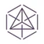
ASM International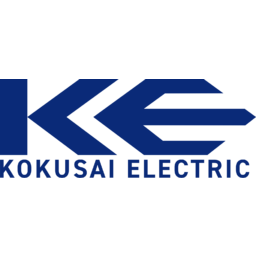
Kokusai Electric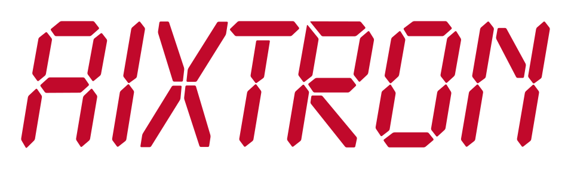
Aixtron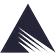
Lam Research - 2Belys mønstretLys skinner gennem en maske og tegner mønstret på laget. Det kaldes litografi.
- 3Æts mønstret udDet, der ikke skal være der, bliver ætset væk.
- 4Rens, fyld og målSkiven bliver renset, hullerne fyldes med metal, og maskiner måler, om alt sidder rigtigt.
ACM ResearchKLA
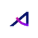
NovaOnto InnovationLasertecRigaku
Forretningsmodellerne
Otte måder chipselskaberne tjener penge på
Fem grupper laver chippen: software, skiver, maskiner, fabrikker og pakning. Tre grupper sælger den færdige chip, der regner, husker eller styrer strøm. Mange af fondens chipselskaber laver altså ikke selv chips. Grupperne står efter, hvor meget de fylder i fonden.
Software til chipdesign
…af fonden
En chip begynder som en tegning. Ingeniører tegner og afprøver den i særlig software, før noget bliver lavet. Selskaberne tjener penge på licenser til softwaren.
Skiver og kemi
…af fonden
Det hele starter med en tynd skive af halvledermateriale, kaldet en wafer. Fabrikken skal også bruge meget rene materialer og kemikalier. Selskaberne tjener penge på at sælge skiver af silicium og andre halvledermaterialer og på kemi til fabrikkerne.
- SoitecLaver særlige skiver (wafers), hvor et tyndt isolerende lag ligger under siliciummet.
- IQELaver skiver med særlige halvledermaterialer til lys og trådløs kommunikation.
- AXTLaver skiver af særlige materialer, fx indiumfosfid og galliumarsenid.
- EntegrisLeverer materialer og udstyr til chipproduktionen.
- WolfspeedLaver materialer og komponenter af siliciumkarbid til strømelektronik.
Udstyr til chipfabrikker
…af fonden
På fabrikken bygges chippen op lag på lag af maskiner, der lægger lag på, belyser, ætser, renser og måler. Selskaberne tjener penge på at sælge maskinerne og på service og reservedele bagefter.
- LPKF Laser & ElectronicsLaver laserudstyr til fremstilling. En del af udstyret bruges til glas, når chips pakkes. Resten bruges til printplader, solceller og lasersvejsning.
- NovaLaver måleudstyr, der kontrollerer processen undervejs i chipfabrikken.
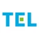
Tokyo ElectronLaver udstyr til chipfabrikker.- ASM InternationalLaver udstyr, der lægger meget tynde lag på skiven.
- MKSLaver instrumenter og dele til chipudstyr. Chipmarkedet stod for 43 % af omsætningen i 2025.
- LasertecLaver udstyr, der kontrollerer masker og skiver, også til den mest avancerede litografi.
- RigakuLaver videnskabelige instrumenter. Omkring en tredjedel af omsætningen er måleudstyr til chipfabrikker (1. halvår 2026).
- KLALaver udstyr, der inspicerer og måler under chipproduktionen.
- Onto InnovationLaver måle- og inspektionsudstyr til chipindustrien.
- AixtronLaver udstyr, der lægger tynde lag af halvledermateriale.
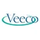
Veeco InstrumentsLaver procesudstyr til chipproduktion.- Kokusai ElectricLaver og servicerer udstyr, der lægger tynde lag på skiven.
- ACM ResearchLaver procesudstyr, bl.a. til at rense skiver.
- ASMLLaver de litografimaskiner, der belyser mønstret på skiven.
- Lam ResearchLaver udstyr, der ætser og lægger lag på skiven.
- Applied MaterialsLaver og servicerer udstyr til chipfabrikker.
- Singulus TechnologiesLeverer udstyr til tyndfilmsbelægning og overfladebehandling.
- Axcelis TechnologiesLaver udstyr, der skyder små partikler (ioner) ind i skiven for at ændre dens egenskaber.
Chipfabrikker for andre
…af fonden
Flere af de kendte chipselskaber, fx NVIDIA og AMD, har ingen egen fabrik. De sender tegningen til en kontraktproducent, altså en fabrik, der laver chips for andre. Selskaberne tjener penge på hver færdig skive, de laver for kunderne.
- GlobalFoundriesLaver chips for kunder, der selv har tegnet dem.
- Tower SemiconductorFabrik, der laver særlige typer chips efter kundernes tegninger.
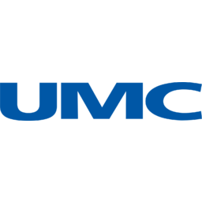
UMCKontraktproducent: laver chips for andre og tjener mest på færdige skiver.- X-FABLaver særlige typer chips for andre på seks fabrikker.
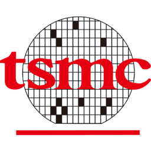
TSMCKontraktproducent, der kun laver chips for andre.
Pakning og test
…af fonden
En chip er for lille og skrøbelig til at sidde alene i en computer. Den bliver forbundet, kapslet ind og testet. Selskaberne tjener penge på maskiner til pakning og test, og nogle pakker og tester chips for andre.
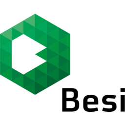
BesiLaver maskiner, der samler chips, også meget tæt sammen i én pakke.- SUSS MicroTecLaver udstyr, der belægger, belyser og sammenføjer skiver, når chips laves og pakkes.
- ASMPTLaver udstyr til at samle og pakke chips og til at montere dele på printplader.
- CamtekLaver udstyr, der inspicerer og måler chips.
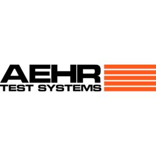
Aehr Test SystemsLaver udstyr, der tester chips under hård belastning, så svage chips bliver fundet tidligt.- AdvantestLaver testsystemer, der tester chips på skiven og når de er færdige.
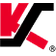
Kulicke & SoffaLaver udstyr, der forbinder chippen elektrisk med sin pakke.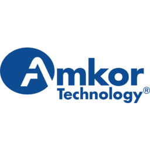
Amkor TechnologyPakker og tester chips for andre selskaber.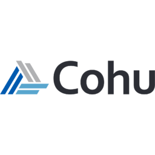
CohuLeverer test- og håndteringsudstyr til chipproduktion.- FormFactorLaver probekort: nålehoveder, der tester chips, mens de sidder på skiven.
- TeradyneLaver automatisk testudstyr til chips og industrirobotter.
Processorer og AI-chips
…af fonden
Processorer laver selve beregningerne. En AI-chip er bygget til at regne mange små regnestykker på én gang. Selskaberne tjener penge på at sælge chips og systemer, og de fleste får chipsene lavet hos en kontraktproducent.
- Cerebras SystemsUdvikler en computerplatform til kunstig intelligens med egne systemer og software. Selve processoren laves af TSMC.
- BroadcomUdvikler chips og software til netværk og datacentre. Det meste af produktionen er lagt ud til andre fabrikker, bl.a. TSMC.
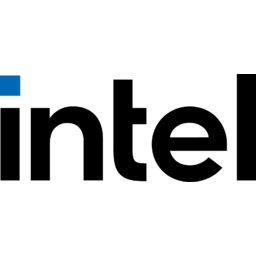
IntelTegner og laver processorer og har egne chipfabrikker.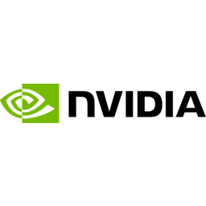
NVIDIALaver grafikprocessorer, netværk og software til AI i datacentre. Har ingen egne chipfabrikker.- Marvell TechnologyLaver chips til datacentre og netværk. Har ingen egen chipfabrik.
- AMDLaver processorer, grafikchips og chips, som kunden kan indstille. Skiverne laves hos andre fabrikker.
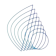
BlaizeUdvikler AI-computere med egne chips og software. Chippen laves af Samsung.
Hukommelse og lagring
…af fonden
En regnechip er kun så hurtig, som data kan komme frem til den. Hukommelse holder data tæt på chippen, og lagring gemmer data, også når strømmen er slået fra. Selskaberne tjener penge på hukommelse, flash og harddiske. Priserne svinger meget med efterspørgslen.
- Samsung ElectronicsLaver hukommelseschips og processorer til mobiler og producerer chips for andre. Koncernen laver også fx tv og telefoner.
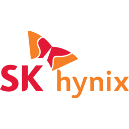
SK hynixLaver hukommelseschips, både arbejdshukommelse og flash.- KioxiaUdvikler og laver flashhukommelse og SSD-drev, der gemmer data.
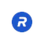
RambusLaver chips og tegninger, der forbinder processoren med hukommelsen, og giver hukommelsesproducenter licens til sine patenter.- Micron TechnologyLaver arbejdshukommelse og flash på egne fabrikker.
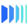
Western DigitalLaver harddiske, som gemmer de data, computerens chips arbejder med.- Seagate TechnologyLaver harddiske og systemer, som gemmer computerens data.
- SanDiskLaver flashhukommelse og SSD-drev, der gemmer data.
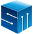
Silicon MotionUdvikler styrechips til flashlagring, fx SSD-drev og lager i telefoner.
Strøm-, styre- og forbindelseschips
…af fonden
Alle chips skal have strøm i den rigtige mængde og kunne tale med omverdenen. Strømchips fordeler strømmen, og andre chips holder takten, sender trådløst eller tager imod signaler fra sensorer. Selskaberne tjener penge på chips og komponenter, som sidder i alt fra biler og fabrikker til telefoner og datacentre.
- Taiyo YudenLaver små elektroniske komponenter, fx kondensatorer, der sidder ved siden af chipsene i elektronik. Komponenterne understøtter chippenes arbejde.
- Navitas SemiconductorUdvikler strømchips af nye materialer (galliumnitrid og siliciumkarbid), bl.a. til AI-datacentre og energianlæg.
- SiTimeLaver timingchips, der holder takten i elektronik. Har ingen egen chipfabrik.
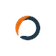
onsemiLaver strømchips og sensorer.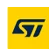
STMicroelectronicsTegner og laver mange slags chips til biler, industri og elektronik.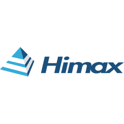
Himax TechnologiesLaver chips, der styrer skærme, og billedsensorer. Har ingen egen chipfabrik.- Ambiq MicroLaver chips, der bruger meget lidt strøm, til små apparater og AI i dem.
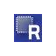
Renesas ElectronicsLaver små styrechips, strømchips og analoge chips, især til biler og industri.- Infineon TechnologiesLaver chips til strømforsyning, biler og forbundne apparater.
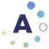
AelumaUdvikler chips til kommunikation og sensorer, der også bruger lys. Selskabet er i udviklingsfasen.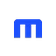
Monolithic Power SystemsLaver chips, der styrer strømforsyningen. Har ingen egen chipfabrik.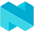
Nordic SemiconductorLaver trådløse chips med lavt strømforbrug, fx til Bluetooth.- Alpha and Omega SemiconductorUdvikler og leverer strømchips.
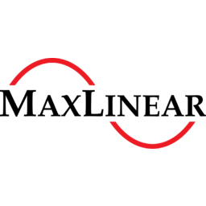
MaxLinearLaver kommunikationschips til bredbånd, netværk og datacentre.- Analog DevicesTegner og laver chips, der omsætter virkelige signaler som lyd, lys og bevægelse til data.
- Texas InstrumentsTegner og laver analoge chips og styrechips til elektronikproducenter.
- AmbarellaUdvikler strømbesparende chips til AI i kameraer og biler.
- Microchip TechnologyLaver små styrechips (mikrocontrollere) og analoge chips til elektronik.
- Lattice SemiconductorLaver strømbesparende chips, som kunden selv kan programmere. Har ingen egen chipfabrik.
Flere af fondens selskaber arbejder også med området. Du finder dem desuden i disse temaer: Apple (Platformsøkonomi).
Grupperne er NewDeal Invests egen opdeling. Beskrivelserne bygger på selskabernes egne årsrapporter og hjemmesider. Western Digital, Seagate og Taiyo Yuden laver ikke selv chips, men harddiske og komponenter, der sidder ved siden af chipsene. Andele i PMINDI pr. … (fondens data).
Forskellen
Hvad adskiller et chipselskab med egen fabrik fra et uden?
Tegner og laver selv chipsene, fx Intel og Samsung.
Hvad de gør
Tegner chippen og får den lavet hos en kontraktproducent, fx NVIDIA og AMD.
Skal selv betale for fabrikkerne og maskinerne.
Pengene
Betaler kontraktproducenten for hver færdig skive.
Står med dyre fabrikker, hvis efterspørgslen falder.
Risikoen
Afhænger af kontraktproducenten, ofte TSMC i Taiwan.
Det har vi skrevet
NewDeal Invests perspektiv
Ordret uddrag af NewDeal Invests egne ugebreve og indlæg om temaet, med dato og link til hele teksten. Det er ikke en anbefaling.
"Men det er en helt anden disciplin at investere i ny teknologi. Når NVIDIA eller Cerebras udvikler en ny chip, som endnu ikke er kommet på markedet, kan vi ikke vide med sikkerhed, om produktet bliver en succes."
Nævner: NVIDIA, Cerebras
Læs hele teksten på bloggen (åbner i nyt vindue)Risici
Risici ved chips og halvledere
Salget svinger
Chipselskabernes salg følger efterspørgslen og kan falde hurtigt, når kunderne har købt nok. Det gælder især hukommelse, hvor salget steg 34,8 % i 2025 og lige så hurtigt kan falde igen.
Én ø i centrum
En stor del af de mest avancerede chips bliver lavet i Taiwan, bl.a. hos TSMC. Uro eller konflikt i området kan ramme hele kæden.
Eksportregler
USA begrænser salget af avancerede chips og chipmaskiner til Kina, og reglerne kan blive strammet yderligere. Det rammer fx NVIDIA og ASML.
Ny teknologi kan skuffe
En ny chip kan vise sig ikke at blive en succes, og selskaber, der satser på én teknologi, kan miste deres forspring.
Dyre fabrikker
Nye chipfabrikker og maskiner koster store beløb, og hvis efterspørgslen falder, kan fabrikkerne stå halvt tomme.
Kilder: NVIDIAs årsrapport (åbner i nyt vindue) for regnskabsåret til 25.1.2026, TSMCs årsrapport for 2025 (åbner i nyt vindue) og ASMLs regnskab for 2025 (åbner i nyt vindue). Listen er et udvalg og ikke en fuldstændig oversigt.
Kilder og kreditering
Tal og tekst
- Temaer og grupper: NewDeal Invests egen opdeling. Beskrivelserne af selskaberne bygger på deres egne årsrapporter og hjemmesider.
- Verdens salg af chips i 2025 (791,7 mia. dollar, 25,6 % mere end i 2024), logikchips (301,9 mia. dollar, +39,9 %) og hukommelse (223,1 mia. dollar, +34,8 %): Semiconductor Industry Association, 6.2.2026 (åbner i nyt vindue). Andre chips, deres vækst og andelen "2 af 3 dollar" er NewDeal Invests egen beregning.
- Over 1.000 trin: KLA, Chip Manufacturing 101 (åbner i nyt vindue). Omkring 12 uger gennem fabrikken: Semiconductor Industry Association, 26.2.2021 (åbner i nyt vindue). Trinene i "Byg en chip, lag for lag": ASML, 6 crucial steps in semiconductor manufacturing (åbner i nyt vindue).
- Risici: NVIDIA (åbner i nyt vindue), TSMC (åbner i nyt vindue) og ASML (åbner i nyt vindue).
- Citatet: NewDeal Invest, "Global System Rupture", 19.10.2026 (åbner i nyt vindue).
Tegninger og logoer
- Tværsnittet af chippen, figurerne og ikonerne er forenklede tegninger lavet af NewDeal Invest med hjælp fra AI.
- Logoer tilhører de enkelte selskaber.